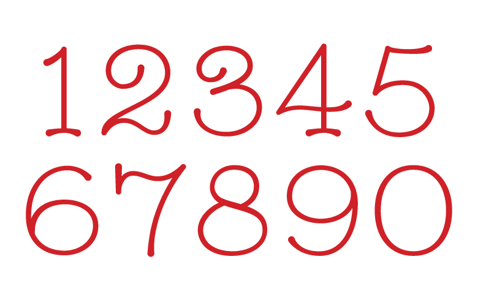

Schoolmarm
2013
Schoolmarm is a very disapproving numeral set, designed with pencils, books and teachers dirty looks in mind. Inspired by the schoolhouse era, Schoolmarm features rounded terminals, and low contrast strokes.
- Free download available soon -

Caption Text Caption Text

Caption Text Caption Text
http://www.timespent.biz
→